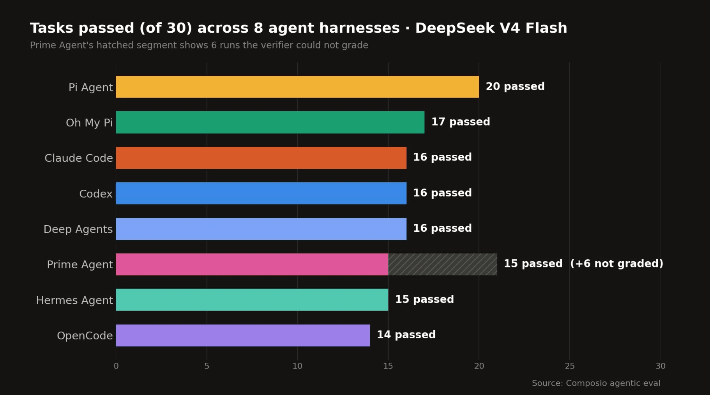
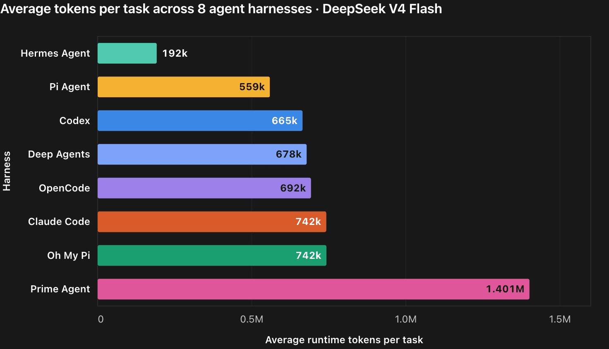

cat agent | less
How agents work and how they're built.
Han Cheol Moon · August 2026
why we're here
Prompt tips, a model leaderboard, a hands-on tutorial.
The goal: understand what each harness keeps fixed, what it makes replaceable, and which approach fits your work.
before we start
A snapshot of a fast-moving field.
These harnesses ship weekly. Flags, defaults, and whole features change.
Its core is closed. Anthropic has not confirmed it.
30 tasks, one model, pass/fail — and not every harness on the same settings. Stars measure attention, not quality.
table of contents
first principles · 1/2
Not a chatbot. Not a fixed script. A model that decides its own next steps toward a goal, using tools, until it's done.
One user turn produces one response. It may call a tool along the way, but there is no autonomous loop toward a goal.
Fixed steps in a fixed order. Fast and predictable — but can't adapt when the world doesn't match the plan.
Same model — but it chooses which tool to call, when to stop, and how to recover. That choice is the whole difference.
first principles · 2/2
Every agent here runs the same loop:
the other 99%
Everything wrapped around that loop is called the harness.
Which tools exist, how they're described, at what "altitude" — a few primitives vs. a rich toolbox.
What enters the window and when: memory files, compaction, caching, subagent isolation.
Permission prompts, approval modes, sandboxes — the UX of letting a model run commands.
Hooks, skills, plugins, MCP (Model Context Protocol), or deliberately no MCP at all — how users bend the agent to their workflow.
Transcripts, resume/fork, replay — whether you can see and reconstruct what the agent did.
TUI, GUI, headless, SDK — how humans steer, interrupt, and review.
“Everything that isn't the model is the harness — including the user.
the discipline · harness engineering · 1/2
"Anytime you find an agent makes a mistake, you engineer a solution such that the agent never makes that mistake again."
“Add scaffolding when it helps. Remove it when the model no longer needs it.”
src: mitchellh.com/writing/my-ai-adoption-journey · anthropic.com/engineering/harness-design-long-running-apps
the discipline · harness engineering · 2/2
Same model weights, different harness. The scores move dramatically.
2026, "Stop Comparing LLM Agents Without Disclosing the Harness." Benchmark leaderboards are increasingly harness leaderboards.
src: arxiv.org/abs/2605.23950 · futureagi.com coding-agent harness benchmark
harness anatomy · 1/7
Who defines what the agent can do: the model or the harness?
rg 'API_KEY' src/npm testrm -rf build/
npm test looks simple, but package.json decides what actually runs.
Flexible, but harder to predict.
Grep("API_KEY", path="src/")
This tool can only search. It cannot install or delete anything.
Limited, but easier to control.
A dedicated tool reduces what the model can ask to do.
harness anatomy · 2/7
Restricting access buys control and pays for it elsewhere. Itemized:
Broad access · Bash | Restricted access · Grep | |
|---|---|---|
| Control | Coarse — the same tool can also download or delete | Precise — this tool can be search-only |
| Reliability | Model must write valid, platform-specific syntax | Harness validates inputs and can normalize behavior |
| Context rent | One general tool description, reused for everything | Another schema loaded on every request |
| Build cost | None — the shell already exists | Code to write, test, and maintain per platform |
This is why no harness picks one: you promote an operation to a dedicated tool when it is frequent or dangerous enough to be worth the rent.
harness anatomy · 3/7
If the model needs to use something now, it must be in context. The window is finite, so the harness decides what enters, when, and at what detail.
System prompt, tools, and earlier turns stay identical — process them once, then reuse the cached work.
Replace a long history with shorter notes. It buys space, but compression is lossy.
Let a child search thousands of lines; return only its conclusion to the main conversation.
CLAUDE.md or AGENTS.md is loaded again on later requests, surviving conversation compaction.
Cache what repeats. Compress what ages. Delegate what sprawls. Persist what must survive.
harness anatomy · 4/7
One depends on judgment before the action. The other limits the process while it runs.
A human or classifier decides each time. Repeated prompts create permission fatigue: eventually, every answer becomes yes.
Inside the boundary → run without asking
Cross the boundary → block or request permission
The OS enforces this boundary over files, network, and processes.
The sandbox is the safety layer that survives bad judgment.
harness anatomy · 5/7
Each mechanism extends the agent in a different way.
Example — staging deployment
When the agent requests deployment, the hook checks the branch first.
Approved → continue · Not approved → block
It still works if the model forgets the rule.
Teaches the agent how to perform a task. Example: explain your company's staging procedure.
Exposes an external capability as a tool. Example: provide deploy_to_staging from a deployment platform.
Distributes skills, MCP configuration, hooks, and commands as one installable package.
They are not interchangeable: skills teach, MCP connects, hooks enforce, and plugins package.
harness anatomy · 6/7
A session is one episode of work: messages, tool calls, and results. What the harness saves determines what you can do afterward.
Save prompts, replies, commands, and results. Human-readable text helps review; JSONL (one JSON object per line) also enables search, analysis, and replay.
Reload the previous history and continue with its context instead of explaining the task again from scratch.
Copy the conversation at an earlier point, then explore a different solution. It branches the session, not necessarily the Git repository.
Walk through saved messages and results, or feed the same inputs back through the loop. Re-running actions needs care: side effects may happen twice.
Save it → inspect it, continue it, branch it, or replay it.
harness anatomy · 7/7
The agent loop stays the same. What changes is who starts it, who watches it, and how another system controls it.
A person types requests, watches each step, approves actions, and can interrupt mid-turn.
No interactive screen and often no person watching. Inputs arrive through flags or standard input; results go to logs or files.
Program code starts sessions, sends prompts, receives events, and presents the agent through its own product interface.
Same loop. Three control surfaces.
deep dive · claude code · 1/6
src: anthropic.com/engineering/claude-code-best-practices · Pragmatic Engineer "How Claude Code is built"
deep dive · claude code · 2/6
Every turn runs the same three steps, and everything the agent learns lands back in one linear active history — the loop reads from it and appends to it, turn after turn.
src: code.claude.com/docs (agent loop) · minusx.ai/blog/decoding-claude-code · *mid-2025 measurement
deep dive · claude code · 3/6
"Single-threaded" describes who decides. "Parallel" describes what runs once a decision is already made.
Every call in that fan-out was requested by the same single reply. Results converge back into the one history before the next model call.
A multi-agent swarm runs independent loops, each with its own context and its own judgment call — no shared history to converge into.
Parallel I/O, singular judgment.
deep dive · claude code · 4/6
The rules are the point: each tool either does exactly what it promises, or refuses and explains what to fix.
Edit has something unambiguous to match.When an edit is ambiguous, the tool stops and makes the model be more precise.
src: code.claude.com/docs (tools reference)
deep dive · claude code · 5/6
The harness keeps durable rules in scoped files, then controls what the finite window retains, caches, or delegates.
CLAUDE.md rides in the stable prefix, ahead of the conversation — so it keeps its cache hit, and compaction ages out the turns behind it without ever reaching the rules.~/.claude preferencesCLAUDE.md rulesSystem prompt = hidden instructions given at the start · system reminder = hidden instructions injected later to re-emphasize a rule or state
src: code.claude.com/docs (memory · costs) · anthropic engineering, context engineering
deep dive · claude code · 6/6
Mode → rules → sandbox. Each layer answers a different question.
plan · inspect onlydefault · ask before unapproved changesacceptEdits · edit freely, ask about commandsbypassPermissions · do not askChoose allow, deny, or ask for individual actions.
npm test./secrets/**Even after permission is granted, the OS can confine the command to the workspace and control network access.
Inside the boundary → run
Outside the boundary → block or ask
Mode sets general behavior → rules handle specific actions → sandbox limits the actual damage.
src: code.claude.com/docs (iam · sandboxing) · github.com/anthropics/sandbox-runtime
deep dive · pi · 1/5
Strong models already know the basic coding loop, so the harness need not decide every workflow for you.
Subagents, permissions, plan mode, MCP and task tracking are built into the product.
Begin with essential tools. Add the workflows you want through extensions and packages.

Composio Golden Eval · 30 multi-app SaaS workflows, same model for every harness. pi also posted the lowest cost per success ($0.028 vs Claude Code's $0.195), but it ran a different reasoning setting and two providers — not a clean head-to-head.
src: mariozechner.at/posts/2025-11-30-pi-coding-agent · pi.dev · composio.dev/content/best-agent-harness-deepseek-v4-flash (Aug 2026)
head to head · claude code vs pi
Both keep the model at the center. They differ in how much supporting machinery is included by default.
Subagents, context management, permissions, sandboxing, and extension points are already built in.
Benefit: less setup for teams, CI, and long autonomous tasks.
Trade-off: the closed core makes more decisions for you.
One main agent loop runs by default. Subagents, permission gates, sandboxing, and custom UI can be added through extensions.
Benefit: the open core stays visible and under your control.
Trade-off: you choose and maintain more of the setup.

What the two philosophies cost in practice — pi 559k tokens per task, Claude Code 742k. Thinner spends less, though Hermes at 192k shows thinness is not the only lever.
deep dive · pi · 2/5
Pi can compose general tools to do most jobs. Dedicated tools usually add structure for the harness, not new ability for the model.
curl reaches the web. Markdown stores todos. A subprocess can run another agent. grep and find search the repository.
A small toolbox can still solve the task.
Grep(pattern="API_KEY")
known: search only, read only
Bash("grep -R API_KEY src")
known: a general command that must be inspected
The harness knows read-only calls cannot change files, so it can execute several at once.
It can allow a search-only tool without also granting the power to modify or delete.
It can validate and display plans, todos, questions, and edits as purpose-built UI.
Safety trade-off: pi's default Bash exposes a wider action space, and its core has no per-tool permission gate. That does not make pi inherently unsafe, but lower-trust work should use a permission extension or run inside a sandbox or container.
Claude Code ships more structure by default. Pi lets you add it when you need it.
src: github.com/earendil-works/pi (core/tools/index.ts · core/sdk.ts) · pi README
deep dive · pi · 3/5
read · write · edit · bash. grep, find and ls are implemented but stay off unless you enable them — bash already covers them.src: github.com/earendil-works/pi (core/tools/index.ts · core/sdk.ts) · pi README · mariozechner.at/posts/2025-11-30-pi-coding-agent
deep dive · pi · 4/5
That includes MCP: not rejected, simply added only when needed.
Pi loads TypeScript extensions at startup. They can add tools, commands, permission gates, and UI, and can be shared as pi packages.
An extension is ordinary code running as you. It can read files, use the network, and execute commands, so install only sources you trust.
By default, pi reaches existing CLI tools through Bash. They already compose through pipes, files, and scripts.
MCP standardizes external tool connections, but its schemas consume context. Users who need it add MCP through an extension.
One example, not a universal ratio; modern clients defer schemas.
Pi does not reject MCP; it makes the context cost opt-in.
src: pi README · docs/extensions.md · mariozechner.at/posts/2025-11-02-what-if-you-dont-need-mcp
deep dive · pi · 5/5
A model on your own GPU arrives with a short context window and slow tokens. A harness that spends thousands of both before you type is the wrong tenant.
read write edit bash, with grep find ls alongside. A weaker model picks correctly far more often from a short list it has seen a million times than from twenty bespoke schemas./model re-reads the config mid-session, so a local model can hand one hard turn to a frontier one with the history intact.LM Studio and vLLM are the same shape — any OpenAI-compatible base URL. Four dialects are recognised, so Anthropic and Google endpoints sit in the same file.
The matching caveat: pi ships no permission gate, so bash runs unprompted. That is a fair trade with a frontier model and a poor one with a 7B that hallucinates a path — add the permission extension, or keep it in a container.
src: pi.dev/docs (models) · composio.dev agentic eval (Aug 2026) · patloeber.com/gemma-4-pi-agent
head to head · claude code vs pi
| Claude Code | pi | |
|---|---|---|
| Core tools | ~15 built-ins (Read, Edit, Bash, Grep, Glob, Agent, Skill, Web…) | 4 active — read, write, edit, bash (7 implemented; grep/find/ls off by default) |
| Prompt overhead (fixed) | multi-thousand tokens (system prompt + tool schemas) | < 1,000 tokens total |
| Context management (variable) | auto-compaction, hidden reminders, subagent isolation | nothing injected invisibly — but exploration lands in the one history |
| Subagents | built-in Agent tool, fresh context per subagent | not in core — shipped as an example extension |
| MCP | yes, schemas deferred to save context | not in core by design — CLI tools + bash instead; an extension adds it |
| Extensibility | hooks · skills · plugins · marketplaces | hot-loaded TypeScript extensions · skills · packages |
| Sessions | resume/fork; internal format | documented JSONL trees — branch, replay, post-process |
| Safety | permission engine + bash AST screening + OS sandbox | no per-tool gate — project trust once per folder; sandboxing is your container's job |
| Models | Claude only (Bedrock/Vertex routing) | any — 15+ providers, switchable mid-session |
| Source | closed, minified bundle (SDK + sandbox open) | MIT core, readable in an afternoon |
Rule of thumb: Claude Code when you want maximum capability out of the box; pi when you want to see — and own — every token.
deep dive · opencode · 1/3
An open-source coding agent with Claude Code-like ergonomics — and 200k+ GitHub stars.
plan / build, discovery subagents, AGENTS.md, /init, skills, MCP, hooks and permission prompts.
Any model — 75+ providers.
Server-first — many clients.
Config-first — agents and policy are files.
src: github.com/anomalyco/opencode (200,363★, Aug 23 2026) · opencode.ai/docs · counts change weekly
deep dive · opencode · 2/3
opencode starts the TUI and server together. Run opencode serve standalone and it stays alive when a TUI disconnects; clients reconnect through OpenAPI.
75+ providers via models.dev, including local models. Optional LSP (Language Server Protocol) feedback adds code intelligence; it is off by default.
opencode run --format json scripts it. GitHub integration executes in your Actions runner, not a vendor cloud.
Zen sells optional model access; the MIT harness remains complete without it.
src: opencode.ai/docs/server · /providers · /lsp · /cli · /github · /zen
deep dive · opencode · 3/3
Primary agents: build has full access; plan asks before edits or bash. Switch with Tab.
Subagents: explore reads your code; scout reads dependencies. Call them with @; discovery stays in a child session.
Every agent can set its own model, prompt, step limit and permissions. Each permission is allow, ask or deny.
Sensitive repo? Disable sharing and use a container for hard isolation; there is no built-in OS sandbox.
Only e2e sees Playwright's schemas: less context, less tool noise.
AGENTS.md is native, but OpenCode also reads existing CLAUDE.md rules.
src: opencode.ai/docs/agents · /permissions · /tools · /rules · /share · source: session/llm/request.ts
rising star · deepseek harness · 1/4
An open agent runtime released with V4-Pro on August 13, 2026. Its thesis: Model + Harness = Agent.
185k+ stars in ten days; impressive attention, not proof of maturity.
src: github.com/deepseek-ai/deepseek-harness (185,162★, Aug 23 2026) · thenewstack.io · counts change quickly
rising star · deepseek harness · 2/4
Most coding agents bake in model → tool → result → repeat. DSH makes that orchestration a replaceable component, alongside models, tools, storage and sandboxes.
turn/start → step → tools/execute → turn/end. At each boundary a plugin can observe, modify, reject or replace work — add approval, verification, tracing, or a different next-step policy.
An append-only event log preserves what the model saw and did. Resume, fork and replay use the same history; compaction becomes a replaceable view, not lost evidence.
Standard: full runtime · Minimal: bash + editor, lower overhead · PTC (programmatic tool calling): generated TypeScript batches tool calls, fewer round trips · Creation: builds agent components.
The loop is no longer a hidden constant; it is part of the experiment.
src: thenewstack.io "DeepSeek Harness open source plugins" · justin3go.com review (Aug 15)
rising star · deepseek harness · 3/4
A rough analogy, not equivalence: DSH can reproduce familiar tool philosophies, then go beyond them.
Closest to DSH Standard: a complete runtime with a broad tool surface. Claude Code exposes extensions, but Anthropic owns the core loop.
Closest to DSH Minimal: bash and editing with little overhead. In pi, minimalism is the product philosophy; in DSH, it is one selectable mode.
Agents, models, tools and permissions are configurable around a server loop. DSH goes deeper: plugins can replace the loop and intercept every stage.
Standard or Minimal for familiar workflows; PTC to program the work; Creation to program the agent. Every run remains replayable.
Others ask: which harness? · DSH asks: which harness behavior for this run?
comparison synthesized from each project's docs · mode analogy is explanatory, not a compatibility claim
rising star · deepseek harness · 4/4
Why it matters:
Why wait:
Best viewed today as an open harness laboratory, not a finished coding product.
src: github.com/deepseek-ai/deepseek-harness · justin3go.com review (Aug 15) · docs.bswen.com "DeepSeek Harness vs Pi"
deep dive · hermes · 1/4
Everything so far was organized around code. Nous Research's personal agent shifts the center to memory and self-improvement.
The bet: an agent should become more useful the longer you use it.
src: github.com/NousResearch/hermes-agent · hermes-agent.nousresearch.com/docs (architecture, providers)
deep dive · hermes · 2/4
Hermes can write code, but it sits closer to OpenClaw — a messaging-first personal agent that stays available — than to a repository-first coding assistant.
Terminal and IDE · task-oriented sessions · inspect, edit, test.
Messaging gateway · persistent memory · scheduled work · remote execution.
Claude Code: inspect → edit → test · Hermes: remember → automate → communicate
hermes claw migrate makes the intended migration path explicit: it imports OpenClaw personas, memories, skills, messaging settings and allowlists.
src: Hermes README · README "Migrating from OpenClaw" · hermes claw migrate
deep dive · hermes · 3/4
After complex work, Hermes can create a reusable skill and improve it during later use. Skills follow the portable agentskills.io format.
MEMORY.md and USER.md persist what matters. Honcho models the user across sessions; SOUL.md defines the agent's identity.
SQLite with its FTS5 full-text index provides full-text recall. Long conversations are compressed while session lineage is preserved.
Subagents isolate parallel work, Python can batch tool calls, and cron jobs deliver results to messaging platforms.
Experience → memory or skill → better behavior next time.
src: docs/developer-guide/architecture · docs/user-guide/features/{skills,memory,cron,honcho}
deep dive · hermes · 4/4
One gateway, 25+ adapters. Message Hermes through Telegram, Discord, Slack, WhatsApp, Signal, Teams, email and more while it works on another machine.
smart / manual / off command approval sits above an unoverrideable blocklist. Hermes also protects credential paths, filters secrets and scans context files for prompt injection.
Container backends use minimal capabilities and no-new-privileges. Inside them, command approval is skipped because the container is the boundary.
Know where the boundaries are:
write_file and patch, not the shell.For unattended or messaging use, run Hermes in Docker or a cloud sandbox rather than directly on the host.
src: docs/user-guide/security · docs/user-guide/messaging · docs/developer-guide/architecture
my take
The products look alike because the mechanics converge. They feel different because each puts intelligence, control and trust in a different place.
Model in a loop · tools · context management · sessions · permissions or isolation · extension points.
Is the model the product or a setting? Should the harness shrink, be configured, or be replaced? What persists? Where is the trust boundary?
An agent is not only model + tools. It is a theory of where the intelligence should live.
side by side
| Claude Code | pi | opencode | dsh | Hermes | |
|---|---|---|---|---|---|
| Product center | finished coding agent | transparent, ownable core | agent server | harness laboratory | persistent personal agent |
| Loop | fixed, closed | fixed, minimal | fixed + plugin hooks | replaceable plugin | fixed execution + learning layer |
| Models | Claude only | any (15+) | any (75+) | any (40+) | many; 300+ through Portal |
| Tool philosophy | rich built-ins + MCP | 4 core tools, bash-first | built-ins + MCP + LSP | plugins + selectable modes | 70+ toolsets + MCP |
| Context | managed for you | explicit, user-controlled | server sessions + subagents | append-only event log | memory + SQLite/FTS5 |
| Hard isolation | built-in OS sandbox | bring a container | none — permissions only | plugin-dependent | container backends |
| Signature bet | model capability | minimalism + ownership | configurable server | replaceable harness | improves over time |
Simplified comparison, Aug 2026 — each project overlaps more than one category.
exit code 0
exit
man agent —help
exit 0
Han Cheol Moon
https://han8931.github.io